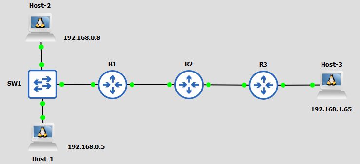
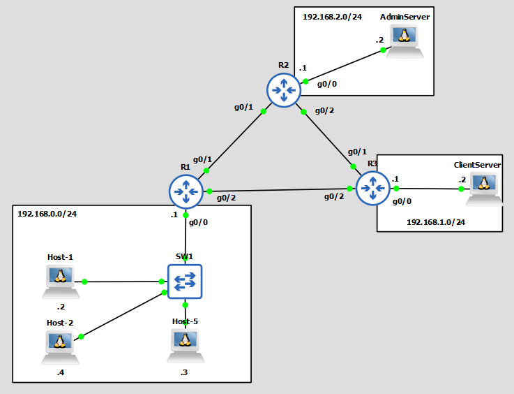
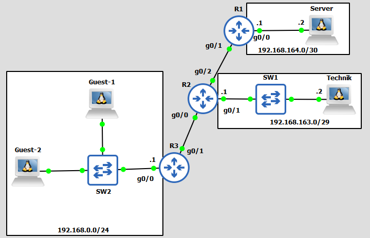

A
B
C
D
Síťový administrátor má za úkol nastavit topologii (viz obrázek níže) dle následujicích pravidel -
Pomocí čeho by to měl síťový administrátor nastavit?
K tomu, abychom tohle mohli nakonfigurovat, potřebujeme něco, co nám umožní identifikovat pakety jednotlivých zařízení. Přičemž díky identifikaci paketů by se pak mohlo například pomocí zdrojové IP adresy rozhodnout, zda paket poputuje dál nebo bude zahozen.
A přesně tohle nám umožňuje tzv. Access Control List.
Access Control List (ACL) je, obecně řečeno, seznam pravidel, jež nám pomáhá identifikovat pakety podle určitých parametrů jako zdrojové IP adresy, IP adresy příjemce, L4 portů atd.
ACL jako takové má mnoho využití a velmi záleží na tom, kam jej aplikujeme, pro CCNA stačí vědět, že jej můžeme obecně aplikovat na:
V rámci této kapitoly se budeme bavit pouze o aplikaci na interface.
ACL je tedy seznam pravidel (také často nazývaných jako ACE - Access Control Entry). Tyto pravidla se skládají z činnosti, která nastane, pokud se najde paket splňující pravidlo (přijmutí paketu, zahození paketu a okomentování paketu) a parametrů (např. zdrojové IP adresy, L4 portů atd.).
deny host 192.168.0.1
- ukázka ACE, jež zahazuje všechny pakety se zdrojovou IP 192.168.0.1.
Na to, jaký parametr lze použít, má vliv typ ACL.
Na začátek je nutno zmínit, že existují různé typy ACL. Pro CCNA jsou nejdůležitější 2 typy - standard a extended. Ty se od sebe liší hlavně tím, že každý vytváří pravidla na základě jiných parametrů -
Typy ACL můžeme definovat pomocí čísla (Numbered ACL) či pomocí jména (Named ACL).
Při definici ACL pomocí čísla si musíme pamatovat, že pro standard ACL jsou vyhrazená čísla 1-99 a 1300-1999 (Rozsah 1300-1999 byl ke standard ACL přidělený až později, proto je tam taková odchylka). K Extended ACL zas byla přidělená čísla 100-199 a 2000-2699 (rozsah 2000-2699 byl opět přidán později).
Při konfiguraci ACL spíš doporučuji konfigurovat ACL pomocí jména. Konfigurace ACL pomocí jména nám oproti ACL konfigurované pomoci čísla umožní přeřadit jednotlivé ACE, vložit ACE mezi již existujicí ACE a celkově nakonfigurovat více ACL.
Další věcí, co je třeba si promyslet, je pořadí jednotlivých pravidel v rámci jedné ACL. ACL totiž fungují na tom principu, že se při filtraci kontrolují pravidla od 1. do toho, který byl zadaný jako poslední. Pokud se během toho procesu podaří najít takový paket, který splňuje pravidlo, tak se další ACE v ACL nekontrolují.
Na tohle je velmi nutné dávat si pozor, důležitost správného pořadí ACE si dokážeme na příkladu -
Máme nastavit to, že všechny pakety z 192.168.0.0/24 budou kromě 192.168.0.58 zahozeny.
Vytvořili jsme si tedy ACL v tomto pořadí -
Kdybychom to však nastavili v tomto pořadí, tak by se nám stalo, že paket se zdrojovou IP adresou 192.168.0.58 by byl stejně zahozen, protože 1. pravidlo by bylo naplněno a druhé by tím pádem bylo ignorováno. Proto by v tomto případě bylo správným řešením prohodit pořadí těchto pravidel.
Nicméně v tomto případě můžeme to 2. pravidlo zcela vynechat, protože na konec ACL se vždy automaticky přidá tzv. implicitní zákaz, který říká, že všechno, co není v ACL povoleno bude zahozeno.
Jestliže máme vytvořenou ACL, je třeba pro filtrování paketů rozhodnout -
Interface má 2 směry -
Pouze 1 ACL lze uplatnit v jednom směru! Pokud bychom se pokusili aplikovat ve stejném směru vícero ACL, tak by došlo k nahrazení té dosavadní ACL.
Obecně platí, že standard ACL aplikujeme, co nejblíže k příjemci -
Pakliže bychom měli topologii ukázanou výše a měli bychom nastavit, že Host-1 nebude moci pingnout Hosta-3, tak bychom použitím té rady věděli, že ACL s takovým pravidlem uplatníme na R3 interfacu, který směřuje k Hostovi-3 ve směru ven z interfacu.
Nyní se pokusíme aplikovat výše uvedené znalosti na příklad z úvodu -
Pro zopakování tedy máme následujicí topologii -
Jako síťař máme v této topologii máme nastavit to, že:
Nejdříve je třeba se rozhodnout, jaký typ ACL použijeme. V našem případě bude úplně bohatě stačit standard ACL, avšak i výběrem Extended bychom nic nezkazili.
Dál je třeba se zamyslet nad zařízením, interfacem a směrem, kam jednotlivé ACL uplatníme.
1. pravidlo (P1), že host-5 bude moci komunikovat pouze se zařízeními v síti 192.168.0.0/24, může být poněkud záludné, protože nám nedává žádného specifického příjemce, ke kterému by se takový paket nemohl dostat. Nicméně víme, že paket nemá komunikovat s nikým jiným než se zařízeními v subnetě 192.168.0.0/24. Tím pádem by nás mělo napadnout, že nejlepší možností bude ACL aplikovat na R1.
R1 má aktuálně v provozu tři interfaci - g0/0, g0/1 a g0/2. Aplikace ACL na interface g0/0 ve směru dovnitř by se mohla na první pohled zdát jako úplně nejlepší možnost, protože to, že se paket nedostane na router by nám zcela zaručilo, že paket nebude poslaný nikam dál než na 192.168.0.0/24. Toto řešení je však zcela špatné, protože nenaplňuje podmínku - host-5 by totiž tím pádem nemohl posílat pakety na 192.168.0.1, který je v subnetě 192.168.0.0/24.
Tudíž jediným správným nastavením na R1 by bylo to, že bychom ACL s tímto pravidlem aplikovali na g0/1 a g0/2, v obou případech ve směru ven.
3. pravidlo (P3), že host-2 může komunikovat se všemi zařízeními v topologii kromě AdminServeru, nakonfigurujeme podle poučky výše na R2 interfacu g0/0 směrem ven.
Nyní se můžeme podívat na 2.pravidlo (P2), které říká, že Host-1 může komunikovat se všemi zařízeními v topologii. Možná si právě teď říkáte, že v tom případě není třeba nic konfigurovat, jenže opak je pravdou a kvůli již existujicím ACL na R1 g0/1, g0/2 a R2 g0/0 je nutné takové pravidlo nakonfigurovat (všude, kde je aplikovovaná ACL, platí implicitní zákaz.).
Tím pádem bude třeba na všech těchto interfacích ve směru ven udělat takové pravidlo, které umožní průchod paketu hosta-1.
Na interfacích g0/1 a g0/2 ve směru ven budeme muset kvůli pravidlům 1 a 4 (P4) vytvořit pravidlo, které povolí průchod všech paketů hosta-1 a hosta-2. Pokud bychom chtěli být připraveni na moment kdy jeden z kabelů mezi routery selže, tak na R1 int g0/1 ve směru ven povolíme také průchod všech paketů od ClientServeru a na R1 int g0/2 ve směru ven povolíme průchod všech paketů od AdminServeru.
Nyní si tedy shrňme všechna navržená pravidla:
Na R1 int gig0/1 ve směru ven:
Na R1 int gig0/2 ve směru ven:
Na R2 int gig0/0 ve směru ven:
Podíváme-li se na navržená pravidla na R1, tak zjistíme, že pravidlo 1 bychom mohli díky implicitnímu zákazu zcela vynechat. Tudíž by pravidla vypadala nakonec následovně:
Na R1 int gig0/1 ve směru ven:
Na R1 int gig0/2 ve směru ven:
Na R2 int gig0/0 ve směru ven:
Za standardní ACL můžeme označit tu ACL, jež má pravidla, která kontrolují pouze zdrojovou IP adresu paketu a pokud je zadaná číselně, tak je označená čísly 1-99 a 1300-1999.
Pravidla standardní ACL se konfigurují následovně:
- Tvorba standardní ACL pomocí očíslování
Router(config)#access-list {číslo ACL} {operace (permit | deny | remark)} {parametr (zdroj)}
Kdy číslo ACL je číslo v rozmezí 1-99 nebo 1300-1999, operace je buď permit (přijmi), deny (zahoď) nebo remark (okomentuj) a parametr je zdrojová IP adresa nebo síť zdrojových IP adres s wildcard maskou (invertovaná subnet maska).
- Tvorba standardní ACL pomocí jména
Router(config)#ip access-list standard {jméno ACL}
Router(config-std-nacl)# {*pořadí pravidla} {operace (permit | deny | remark)} {parametr (zdroj)}
Kdy pořadí pravidla je nepovinné (bez specifikace, je použit standardní způsob číslování), operace je buď permit (přijmi), deny (zahoď) nebo remark (okomentuj) a parametr je zdrojová IP adresa nebo síť zdrojových IP adres s wildcard maskou (invertovaná subnet maska).
Hotovou standardní ACL poté můžeme aplikovat na interface pomocí příkazu -
ip access-group {číslo | jméno ACL} {směr}
Kdy směr je buď in (dovnitř) nebo out (ven).
- ukázka standardní ACL
Router(config)#access-list 1 remark ## Prijeti vsech paketu mimo tech ze subnety 192.168.15.0/24 a hosta-8 (192.168.16.8) ## Router(config)#access-list 1 deny 192.168.15.0 0.0.0.255 Router(config)#access-list 1 deny host 192.168.16.8 Router(config)#access-list 1 permit any
Pro demonstrativní ukázku konfigurace standardní ACL použijeme příklad z úvodu -
Máme tedy nakonfigurovat v topologii níže následujicí -
Z rozboru v části "Praktická ukázka ACL" již známe všechno, co potřebujeme vědět ke konfiguraci.
Začněme tedy konfigurací ACL na R1.
Nejdříve vytvoříme standard ACL pro interface g0/1 -
R1(config)#ip access-list standard INTG10 R1(config-std-nacl)#remark ## Povolí výstup z interfacum IP adrese 192.168.0.2, 192.168.0.4 a 192.168.1.2 ## R1(config-std-nacl)#permit 192.168.0.2 0.0.0.0 R1(config-std-nacl)#permit host 192.168.0.4 R1(config-std-nacl)#permit 192.168.1.2
Tady na tom příkladu lze vidět způsoby jakými lze v ACL definovat IP adresu. Pro různé subnety se klasicky používá tzv. wildcard mask (invertovaná subnet maska), pro hosta lze pak ještě použít před definicí samotné ip adresy slovíčko host nebo wildcard masku můžeme totálně vynechat (pouze při konfiguraci STANDARD ACL).
Vytvořenou ACL můžeme ihned aplikovat na interface g0/1 pomocí příkazu -
R1(config-if)#ip access-group INTG10 out
Dál nakonfigurujeme standardní ACL pro interface g0/2 -
R1(config)#ip access-list standard INTG20 R1(config-std-nacl)#1 permit host 192.168.0.2 R1(config-std-nacl)#2 permit host 192.168.0.4 R1(config-std-nacl)#3 permit host 192.168.2.2 R1(config-std-nacl)interface g0/2 R1(config-if)ip access-group INTG20 out
Pokud bychom potřebovali mezi jednotlivá pravidla vnořit další, je možné ACL přečíslit -
R1(config)#ip access-list resequence INTG20 10 5
Tento příkaz způsobí přečíslení pořadí jednotlivých pravidel na -
10 permit host 192.168.0.2 15 permit host 192.168.0.4 20 permit host 192.168.2.2
A na konec nakonfigurujeme interface g0/0 na R2 -
R2(config)#access-list 1 deny host 192.168.0.4 R2(config)#access-list 1 permit any R2(config)#interface g0/0 R2(config-if)#ip access-group 1 out
Zde si všimněte že pro označení všech IP adres lze použít klíčové slovíčko any, jehož ekvivalentem je 0.0.0.0 255.255.255.255.
Jestliže bychom si chtěli konfiguraci ACL zkontrolovat, tak použijeme příkaz -
R2#show access-list
Tímto jsme tedy splnili zadání a ukázali si konfiguraci standardní ACL.
Konfiguraci standard ACL si můžete vyzkoušet zde.
Za Extended ACL můžeme označit ty ACL, které jsou schopny filtrovat pakety podle zdrojové IP adresy, IP adresy příjemce, L4 portů a protokolu (IP, ICMP, TCP, UDP atd.).
Pakliže definujeme extended ACL pomocí čísla, tak používáme čísla v rozmezí 200-299 a 2000-2699.
Syntax k vytvoření extended ACL pomocí čísla je následovný -
Router(config)#access-list {číslo ACL} {permit | deny | remark} {protokol} {zdroj} {cíl}
Syntax k vytvoření extended ACL pomocí jména je následovný -
Router(config)#ip access-list extended {jméno}
Router(config-ext-nacl)#{*pořadí} {permit | deny | remark} {protokol} {zdroj} {cíl}
Pořadí je nepovinné!
Máme tuto topologii -
Máme v ní pomocí ACL zajistit následujicí -
Nejdříve si opět rozmyslíme, kam budeme tato pravidla aplikovat.
Protože Guest počítače mají mít přístup pouze ke své subnetě a k HTTP serveru, tak nejvhodnější bude toto pravidlo uplatnit na R3 interfacu g0/1 ve směru ven.
R3(config)#ip access-list extended R1G01 R3(config-ext-nacl)#permit tcp 192.168.0.0 0.0.0.255 host 192.168.164.2 eq 443 R3(config-ext-nacl)#deny ip 192.168.0.0 0.0.0.255 any any R3(config-ext-nacl)#permit ip any any R3(config-ext-nacl)#interface g0/1 R3(config-if)ip access-group R1G01 out
Dále máme pravidlo, které říká, že na server nesmí dojít žádný telnet paket. To bude zřejmě nejvhodnější uplatnit na R1 interface g0/0 ve směru ven.
R1(config)#ip access-list 2158 deny tcp any host 192.168.164.2 eq 23 R1(config)#ip access-list 2158 permit ip any any R1(config)#interface g0/0 R1(config-if)#ip access-group 2158 out
Pokud chceme označit všechny protokoly (tcp, udp, icmp, pim atd.), použijeme slovíčko ip.
Konfiguraci extended ACL si můžete vyzkoušet zde.
K vytvoření ACL pro filtraci IPv6 paketů se používá pouze Extended Name ACL.
Syntax pro vytvoření extended name ACL je následovný -
Router(config)#ipv6 access-list {název}
Router(config-ipv6-acl)#seq {pořadí} {permit | deny | remark} {protokol} {zdroj} {cíl}
Seq {pořadí} může být vynecháno.
Pro aplikaci IPv6 ACL na interface se používá příkaz -
Router(config-if)#ipv6 traffic-filter {Název_IPv6_ACL} {in | out}
Nastav v této síti ACL s následujicími pravidly -
Nejdříve si tedy určíme, kam by bylo nejlepší uplatnit jednotlivá pravidla.
Pravidlo, které říká, že host-1 bude moci server 2 pouze pingnout uplatníme na R2 interface g0/2 ve směru ven.
Pravidlo říkajíc, že host-2 nebude moci komunikovat se serverem 2 (vyjma https paketu), nastavíme na R2 interface g0/2 ve směru ven.
To, že host-2 nebude moci komunikovat se serverem 1 nastavíme na R2 interface g0/0 ve směru ven.
Pokud jsme na R2 interfacu g0/0 ve směru ven uplatnili nějakou ACL, bude nutné do ní přidat pravidlo, že má povolit veškeré pakety od Hosta 1. Tím pádem se o pravidlo, že Host-2 nebude moci komunikovat se serverem 1 postará implicitní zákaz.
Když si to tedy shrneme tak nastavíme 2 ACL - jednu na g0/0 ve směru ven a druhou na g0/1 ve směru ven -
ACL na g0/0:
ACL na g0/2:
Pojďme to tedy nakonfigurovat!
R2(config)#ipv6 access-list R2G00 R2(config-ipv6-acl)#permit ipv6 host 2001::2 any R2(config-ipv6-acl)#interface g0/0 R2(config-if)#ipv6 traffic-filter R2G00 out R2(config-if)#exit R2(config)#ipv6 access-list R2G02 R2(config-ipv6-acl)#seq 1 permit icmp host 2001::2 any R2(config-ipv6-acl)#seq 2 permit tcp host 2001::3 any eq 443 R2(config-ipv6-acl)#interface g0/2 R2(config-if)#ipv6 traffic-filter R2G02 out
Konfiguraci IPv6 ACL si můžete vyzkoušet zde.
| Příkazy | Popis | Mód |
|---|---|---|
| access-list {číslo (od 1 do 99 nebo od 1300 do 1999)} {permit | deny | remark} {IPv4_adresa} {Wildcard_maska} | Vytvoří standardní ACL | Global Config |
| ip access-list standard {název_ACL} | Vytvoří standard ACL a přepne nás do acl módu | Global Config |
| {*pořadí} {permit | deny | remark} {IPv4_adresa} {Wildcard_maska} | Vytvoří standard ACE, *uvádět pořadí je nepovinné | ACL mód |
| access-list {číslo (od 100 do 199 nebo od 2000 do 2699)} {permit | deny | remark} {protokol} {zdroj} {cíl} | Vytvoří extended ACL | Global Config |
| ip access-list extended {název_ACL} | Vytvoří extended ACL a přepne nás do acl módu | Global Config |
| {*pořadí} {permit | deny | remark} {protokol} {zdroj} {cíl} | Vytvoří extended ACE, *uvádět pořadí je nepovinné | ACL mód |
| ipv6 access-list {název_ACL} | Vytvoří IPv6 ACL a přepne nás do acl módu | Global Config |
| *seq {pořadí} {permit | deny | remark} {protokol} {zdroj} {cíl} | Vytvoří ACE, *seq {pořadí} je nepovinné | ACL mód |
| ip access-group {číslo_ACL | název_ACL} {in | out} | Aplikuje ACL na interface | Interface |
| ipv6 traffic-filter {název_ACL} {in | out} | Aplikuje IPv6 ACL na interface | Global Config |
| ip access-list resequence {číslo_ACL | název_ACL} {začínající_pořadové_číslo} {inkrement} | Přeřadí jednotlivé ACE ve specifické ACL | Global Config |
| show access-list | Zobrazí jednotlivé ACL | EXEC |
ACL, Access Control List dokáže pomocí tzv. ACE (pravidel) identifikovat pakety.
Na chování ACL má vliv to, kam jí aplikujeme.
Aplikování ACL na interface nám umožní filtrovat pakety na základě parametrů.
Na to, dle jakých parametrů můžeme filtrovat pakety, má vliv typ ACL.
Pro CCNA úroveň nám stačí vědět to, že je tzv. Standard ACL a Extended ACL.
Standard ACL je ACL, která nám umožní identifikovat pakety pouze pomocí zdrojové IP adresy.
Extended ACL je poté ACL, která nám umožní identifikovat pakety podle protokolu, zdrojové IP adresy, IP adresy příjemce a L4 portů.
ACL můžeme nakonfigurovat 2 způsoby - pomocí čísla (numbered ACL) či pomocí jména (Named ACL).
A
B
C
D